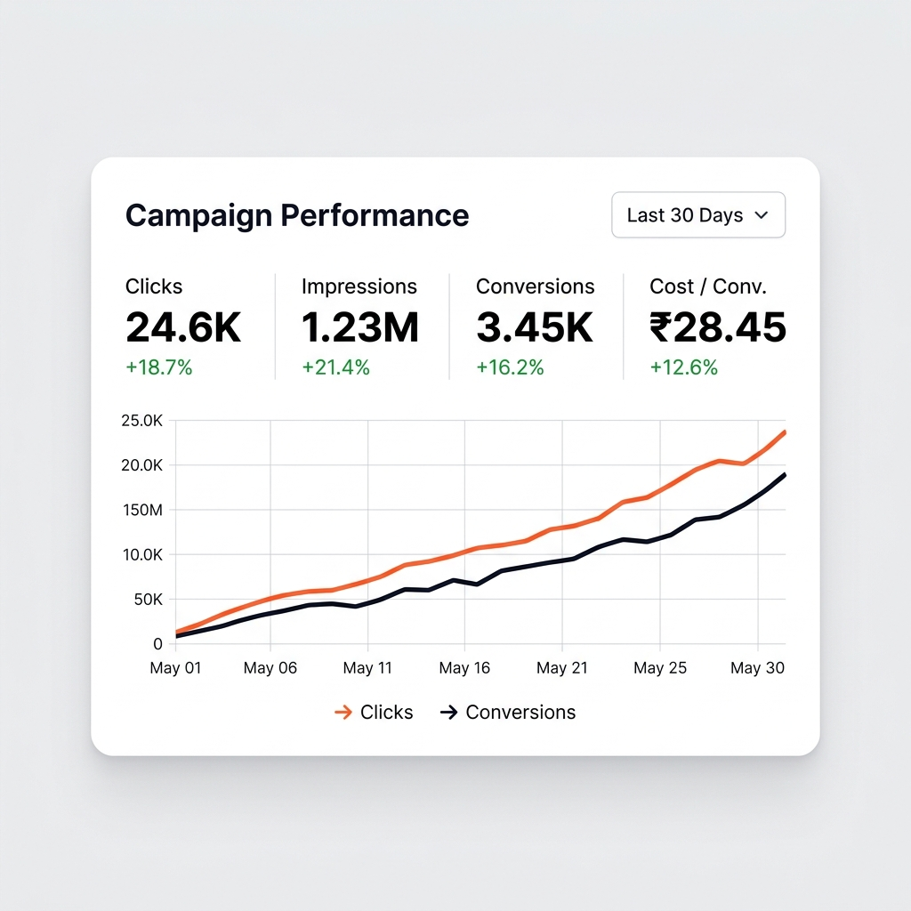
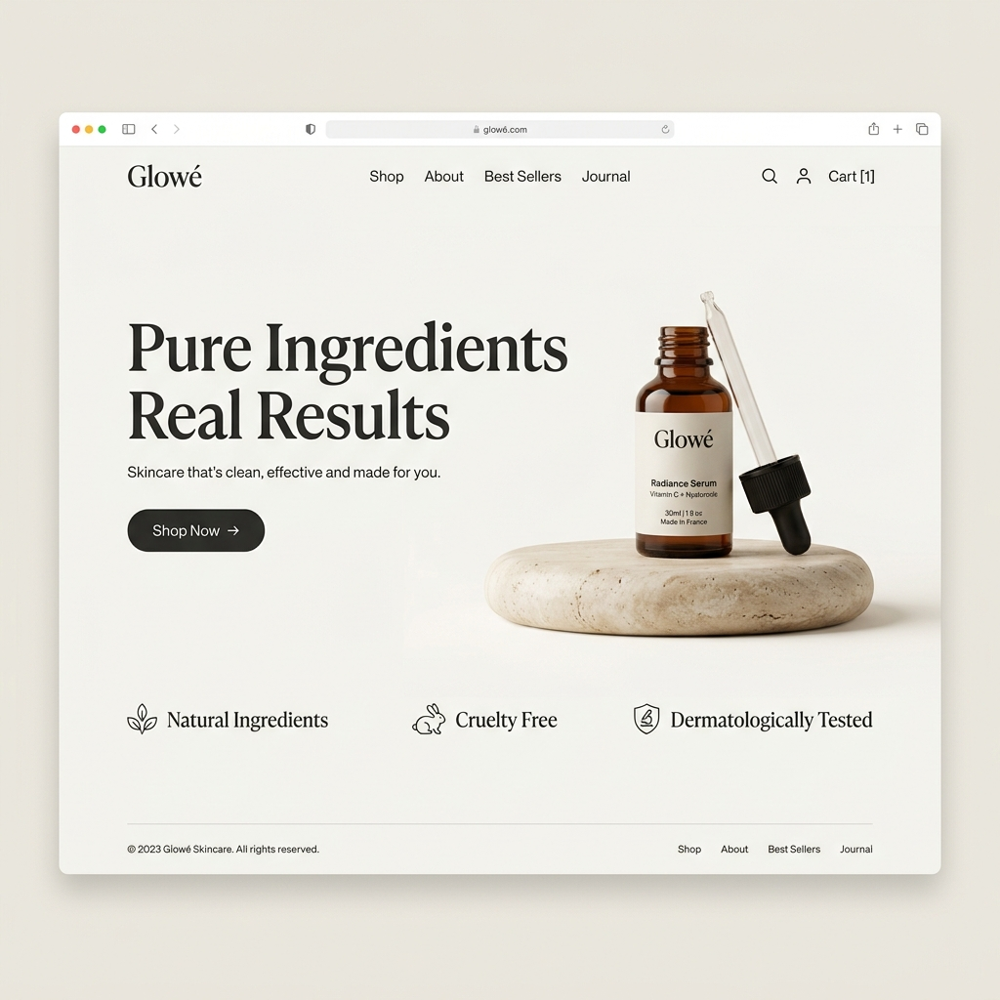
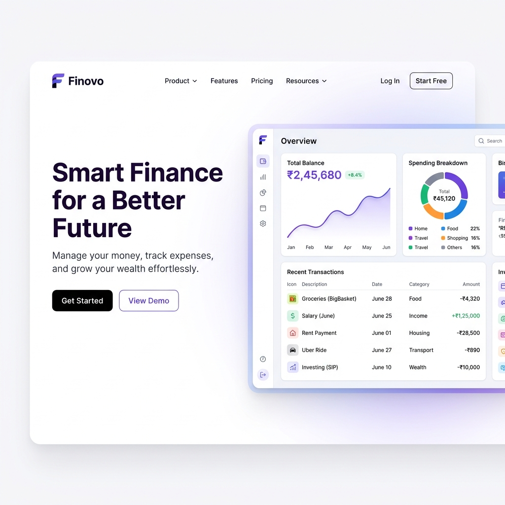

Google & Meta Ads Agency in Trichy for Business Enquiries
Looking for a reliable Paid Ads Agency in Trichy to reach potential customers and generate more business enquiries? RiverBird helps businesses plan and manage paid advertising campaigns across Google Ads and Meta platforms, including Facebook and Instagram.
Running advertisements is not simply about increasing impressions, collecting clicks or spending more money. Effective advertising starts with understanding your customers, identifying where they discover or search for products and services, and giving them a relevant reason to take action.
Some customers actively search Google when they need a service. Others discover businesses while browsing Instagram and Facebook. Your advertising strategy should reflect these different behaviours.
At RiverBird, our paid advertising capabilities cover campaign planning, targeted advertising, ad copywriting, conversion tracking, landing page testing and performance measurement. We help businesses approach paid advertising with clearer objectives and a stronger connection between advertising activity and business enquiries.

Paid Advertising That Connects Your Business with Potential Customers
Every business has a different reason for investing in advertising. A local service provider may want more calls and appointment enquiries. An educational institution may want to connect with prospective students. An online business may want more product purchases, while a B2B company may need enquiries from relevant decision-makers.
A campaign should reflect the specific action that matters to your business. Paid advertising can support objectives such as:
Generating Enquiries
Generating enquiries through website forms, calls or other available contact routes.
Promoting Products & Offers
Promoting products, services and business offers to relevant audiences.
Reaching Active Searchers
Reaching people actively searching for a particular service at the moment of intent.
Brand Discovery
Introducing a brand to potential customers who may not know it yet.
Remarketing Campaigns
Bringing interested audiences back through suitable remarketing campaigns.
Measurable Sales Growth
Supporting sales and conversion activity through measurable advertising campaigns.
The right campaign depends on your product or service, customer behaviour, geographical coverage, competition and available advertising budget. Rather than assuming that every business needs the same advertising combination, the first priority is to understand the customer journey and select the appropriate platform.
Google Ads and Meta Ads: Two Different Ways to Reach Customers
Google Ads and Meta Ads can both support business growth, but they approach potential customers differently. Google Ads can help businesses connect with people actively searching for relevant products and services. Meta Ads can introduce businesses to audiences through Facebook and Instagram when they are browsing social content.
Understanding this difference is important when selecting a paid advertising strategy.
| Business requirement | Google Ads | Meta Ads |
|---|---|---|
| Reach people actively searching | Strong fit | Supporting role |
| Promote visually appealing products | Supporting role | Strong fit |
| Capture existing search demand | Strong fit | Supporting role |
| Build product or brand awareness | Suitable | Strong fit |
| Target relevant search queries | Strong fit | Not its primary approach |
| Promote offers through social content | Suitable in selected formats | Strong fit |
| Reconnect with previous audiences | Suitable through eligible campaigns | Suitable through eligible campaigns |
When Should You Prioritise Google Ads?
Consider prioritising Google Search campaigns when customers already know what they need and search online to find a provider. For example, a person searching for a professional service, repair provider or business consultancy may be closer to contacting a supplier than someone who has only recently discovered that business.
In these situations, relevant keywords, search intent, campaign structure and landing page relevance become important.
When Should You Prioritise Meta Ads?
Consider prioritising Meta campaigns when potential customers need to discover your product, understand an offer or become interested through visual communication. For example, an online retail brand introducing a new collection may benefit from Facebook and Instagram advertising that presents its products to relevant audiences.
Creative quality, audience selection and the clarity of the offer become essential.
Campaign Management Tailored to Platform Strengths
Google Ads Management for Businesses in Trichy
Google Ads allows businesses to advertise across Google's advertising network and reach potential customers when they search for relevant products or services. For example, a person searching for a particular professional service in Trichy may already be comparing providers and looking for someone to contact. A relevant search advertisement can help a business appear during that decision-making process.
Google Ads may be suitable when:
- Potential customers actively search for your services.
- Your business wants to attract enquiries from specific search terms.
- Customers are comparing providers before making a decision.
- You want to promote specific products, services or offers.
- Your website has relevant information and a clear enquiry route.
Google advertising activities can include:
- Search campaign planning: Identifying relevant search themes and structuring campaigns around products, services and customer requirements.
- Keyword targeting: Selecting appropriate search terms and reviewing irrelevant search traffic so that advertising remains relevant to the intended audience.
- Advertising copy: Developing relevant headlines and descriptions that communicate the business offering and encourage meaningful actions.
- Geographical targeting: Selecting locations based on where your potential customers are and where your business can actually serve them.
- Campaign measurement: Evaluating impressions, clicks, conversions, cost per click and cost per conversion according to the campaign objective.
A successful Google Ads campaign requires more than selecting keywords. The advertisement, search intent, landing page and enquiry experience must work together.
Meta Ads Management for Facebook and Instagram
Meta Ads provide businesses with opportunities to reach audiences across Facebook and Instagram through paid social advertising. Unlike search advertising, where a person may already be looking for a specific service, social advertising can introduce a product or business to someone who has not actively started searching. This makes Meta Ads particularly useful for brand discovery, product promotion, audience engagement and enquiry generation.
Meta Ads may be suitable when:
- Your products or services benefit from strong visual presentation.
- Your business wants to introduce a new product or offer.
- You want to reach audiences based on relevant location and audience signals.
- You need to improve visibility among potential customers.
- You want to reconnect with eligible audiences who previously interacted with your business.
Meta advertising activities can include:
- Campaign objective selection: Choosing an appropriate advertising objective based on whether your business wants awareness, website visits, engagement or enquiries.
- Audience planning: Identifying relevant audiences according to business requirements, locations and available targeting options.
- Ad creative and copywriting: Preparing advertising messages and visual content that communicate the offer clearly.
- Campaign testing: Comparing suitable creative variations and audience approaches to understand what attracts meaningful responses.
- Conversion measurement: Using appropriate tracking arrangements to understand campaign activity and configured conversion actions.
- Retargeting: Reaching eligible previous visitors or audiences who have interacted with your business, where suitable tracking and platform requirements are in place.
The quality of a Meta campaign depends on more than the number of people who see an advertisement. The relevance of the offer, creative quality, audience selection and next step all influence whether an interested person becomes an enquiry.
What RiverBird Paid Advertising Services Cover
RiverBird provides digital marketing and paid advertising services in Trichy. Our published capabilities cover PPC management, paid social advertising, retargeting, landing page testing, conversion tracking, ad copywriting and advertising performance dashboards. Depending on the agreed requirements, campaign management can cover the following areas:
1. Campaign Planning & Objectives
The initial direction should reflect what the business wants to achieve. A campaign designed to generate enquiries needs a different approach from one designed to increase product awareness or website traffic. Clear objectives help determine the advertising platform, audience, campaign structure and measurement requirements.
2. Keyword & Audience Research
Google campaigns require attention to the search terms that potential customers use. Meta campaigns require a suitable approach to audience selection and creative relevance. Research helps connect the advertising message with the right customer requirements instead of relying on broad, unrelated targeting.
3. Advertising Copy & Creative
An advertisement needs to explain what is being offered and why the intended customer should take the next step. Relevant headlines, descriptions, images and other creative elements help communicate the offer clearly. Unsupported discounts, guarantees and exaggerated claims are avoided.
4. Landing Page & Enquiry Flow
Getting a visitor to click an advertisement is only part of the process. The destination should provide the information that the advertisement promised. RiverBird's published service information includes custom landing pages and split landing page testing to assess how headings, content, forms and CTAs affect conversion.
5. Pixel & Conversion Tracking
Advertising decisions become more useful when important customer actions can be measured. Conversion tracking helps distinguish between someone who simply visited a website and someone who completed a valuable action, such as submitting an enquiry or making a purchase.
6. Performance Reporting & Optimisation
Campaign performance needs to be reviewed against the original objective. Relevant changes involve refining search terms, adjusting audience selection, evaluating ad messages or reviewing budget allocation. RiverBird uses ROI dashboards to identify what needs attention rather than relying on impressions alone.
Work That Drives Results
Explore recent multi-channel campaigns engineered for high-intent search acquisition and social brand discovery.


Measure More Than Clicks: Understand the Data Behind Your Advertising
A business may receive thousands of impressions and hundreds of clicks without generating the number of meaningful customer enquiries it needs. That is why advertising performance should be evaluated using metrics that relate to the actual business objective.
| Advertising metric | What it tells your business |
|---|---|
| Impressions | How many times advertisements were shown |
| Reach | The number of people or accounts reached, where the platform reports it |
| Clicks | How many times people interacted by clicking |
| Click-Through Rate (CTR) | The proportion of impressions that resulted in clicks |
| Cost Per Click (CPC) | The average advertising cost for each click |
| Conversions | The number of configured valuable actions recorded |
| Conversion Rate | The proportion of measured interactions that resulted in a conversion |
| Cost Per Lead (CPL) | Advertising spend divided by the number of leads generated |
| Customer Acquisition Cost (CAC) | The relevant sales and marketing cost associated with acquiring a customer |
| Return on Ad Spend (ROAS) | Revenue attributed to advertising divided by advertising spend, where reliable revenue tracking is available |
These metrics answer different questions. For example, CTR can help evaluate whether an advertisement attracts attention. CPL can indicate how much advertising spend is associated with generating an enquiry. However, a low CPL does not automatically mean that a campaign generates profitable customers.
A business should also evaluate the relevance of the enquiries, whether potential customers meet its requirements and how many eventually become paying customers. This is why business-side enquiry and sales information can be important alongside advertising platform reports.
A meaningful advertising evaluation connects three stages:
- Advertising activity – impressions, reach, clicks and spend.
- Customer response – enquiries, calls, forms and other configured conversions.
- Business outcomes – qualified leads, sales and revenue.
Why Local Relevance Matters in Paid Advertising
Advertising in Trichy or across Tamil Nadu requires attention to the local audience. A business serving customers in Thillai Nagar, Cantonment, KK Nagar or surrounding areas will have different geographical requirements from an organisation looking to attract customers from Chennai, Madurai, Coimbatore or across South India.
Similarly, a business targeting Tamil Nadu customers may need to consider Tamil and English messaging, while an export or national B2B business may require a wider geographical strategy.
Campaign considerations may include:
- Location selection based on actual service coverage.
- Search terms relevant to the products or services being advertised.
- English, Tamil or mixed-language messaging where appropriate.
- Creative formats suited to the intended audience.
- Relevant landing pages and contact methods.
- Campaign measurement based on the business's desired outcomes.
The key is to reach people who are genuinely relevant to the business, rather than simply maximising geographical coverage.
What Should You Prepare Before Starting a Paid Advertising Campaign?
Advertising performs within a wider business environment. The quality of the offer, available information and ability to handle enquiries can all influence the outcome. Before planning a campaign, it is useful to prepare:
- ✓ Business information: Your products, services and the customers you want to reach.
- ✓ Campaign objective: Whether your priority is calls, enquiries, website visits, purchases or awareness.
- ✓ Target geography: The locations where your business can serve customers.
- ✓ Website or destination: The page or enquiry route that visitors will reach after clicking.
- ✓ Advertising budget: The approximate amount available for platform advertising.
- ✓ Existing campaign information: Previous results, if you have already advertised.
- ✓ Enquiry management: How your business handles calls, messages, forms and customer follow-ups.
These details provide a more practical starting point for campaign planning and budget decisions.
Frequently Asked Questions
Clear answers regarding paid advertising platforms, budgets and performance measurement.
Google Ads helps businesses reach people who are actively searching for relevant products and services. Meta Ads displays advertisements across Facebook and Instagram to reach audiences based on available targeting options and interests. Google is particularly relevant for capturing existing search demand, while Meta can support brand discovery, product promotion and audience engagement.
It depends on your business and customer behaviour. Google Ads may be more suitable when people actively search for your services. Meta Ads may be appropriate when your products or services benefit from visual promotion and audience discovery. Some businesses can benefit from both, provided their budget and campaign objectives support it.
Paid advertising management can include campaign planning, keyword and audience research, advertising copy, creative development, campaign setup, conversion tracking, landing page testing and performance reporting. The actual scope depends on the advertising requirements and agreed services.
There is no single advertising budget suitable for every business. The amount depends on campaign objectives, competition, geographical targeting, expected customer demand and the value of an enquiry or purchase. Platform advertising spend and the service provider's management fee should be understood separately before starting a campaign.
Track more than impressions and clicks. Review conversions, cost per lead, qualified enquiry rate, sales conversion rate and customer acquisition cost where the necessary data is available. Connecting advertising reports with actual sales and enquiry records gives a more useful picture of campaign performance.
Build a More Structured Advertising Strategy with RiverBird
Choosing the right advertising platform is only the beginning. Your campaign needs a clear objective, a relevant message, suitable targeting and a way to evaluate the resulting customer activity. RiverBird provides digital marketing solutions in Trichy, including Google and Meta paid advertising capabilities, supported by advertising copy, tracking, landing page testing and campaign measurement.